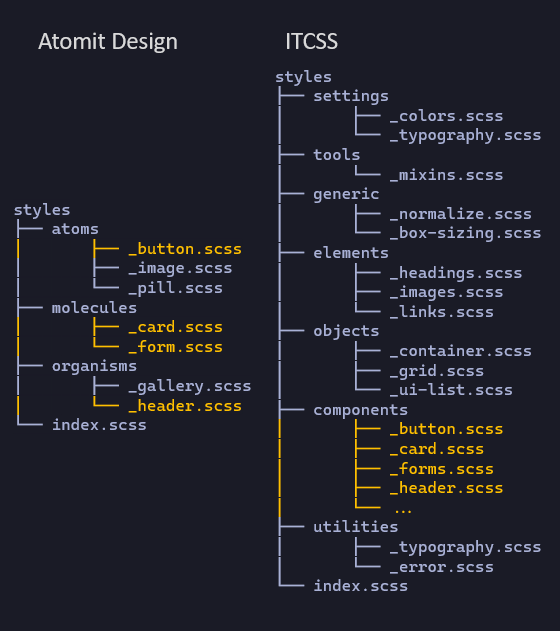
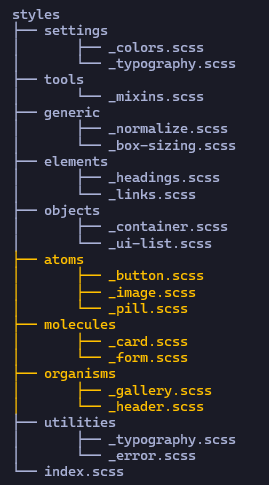
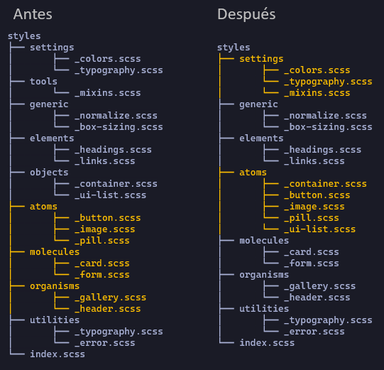

Pero el problema del ITCSS es que la carpeta de components puede llegar a crecer bastante, en cambio en Atomit Design vemos que es mas ordenadito.

Hay que recordar que Atomit Design se basa en la idea de que cualquier interfaz de usuario se puede descomponer en componentes más pequeños y manejables. Aquí solo estamos comparando como es que se ve mejor Atomit Design que tener una carpeta components que puede crecer bastante.
Fusión 1
Lo que podemos hacer es hacer una combinación de ambos y así nos queda un sistema mucho más ordenado.

En lugar de tener la carpeta components hemos juntado el sistema de Atomit Design (que recordemos que se basa en componentes más pequeños y manejables), con el sistema de ITCSS.
Fusión 2
Tambien podemos llegar a juntar tools con settings y objects con atoms.

Esto lo podemos hacer según que aplicaciones porque serian demasiado pequeñas.
Fusión 1 más recomendable
Es recomendable mantener las carpetas separadas al principio porque los átomos en Atomic Design están directamente relacionados con el tema de la aplicación. Por ejemplo, podríamos tener un botón con la clase primary para el color principal, otro para errores, y otro para cancelar. Como estas variaciones están muy ligadas al tema, es mejor mantenerlas en su propia carpeta. Así, cuando el equipo de diseño nos entregue los elementos, sabremos que esos átomos específicos se guardan en esa carpeta. Mientras tanto, en la carpeta objects, colocaremos las clases que usamos para estructurar la aplicación, que no dependen del equipo de diseño.
Mantener estas carpetas separadas resulta en una estructura más escalable que utilizar cualquiera de las dos arquitecturas de forma independiente. Esto se debe a que nos beneficiamos de una mayor colaboración con el equipo de diseño, al mismo tiempo que mantenemos una organización clara sobre dónde colocar cada elemento dentro de ITCSS.
No hay que ser tan puristas
Al final no tenemos que seguir un sistema de arquitectura ciegamente y seguirlo en un plan super purista ya que si nuestra aplicación no es demasiado grande, puede ser un poco overkill tener una estructura así, sino que tenemos que adaptarlo siempre a las necesidaes de nuestra aplicación, tenemos que valorar las necesidades de nuestros estilos y si lo vemos adecuado podemos juntar varios niveles: settings y tools, generic y elements, objetos y átomos como veiamos anteriormente. Nosotros dimos la recomendación de utilizar la fusión 1 pero ya depende.
Otra cosa, nosotros hemos combiando Atomit Design con ITCSS pero hay otros sistemas de arquitectura, que si el equipo está más acostumbrado a utilizar esas pues tiene mas sentido meter esas en lugar de Atomit Design, lo importante es tenerlo claro y discutirlo con el equipo.
Esto es un sistema de arquitectura que funciona bien, pero siempre es adaptarlo en función de nuestra aplicación.